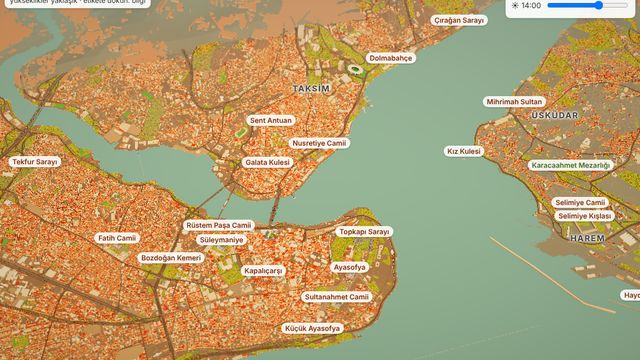
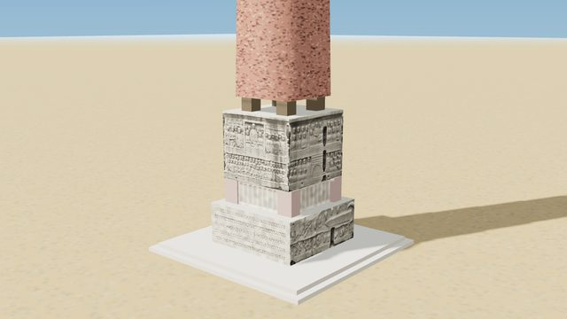
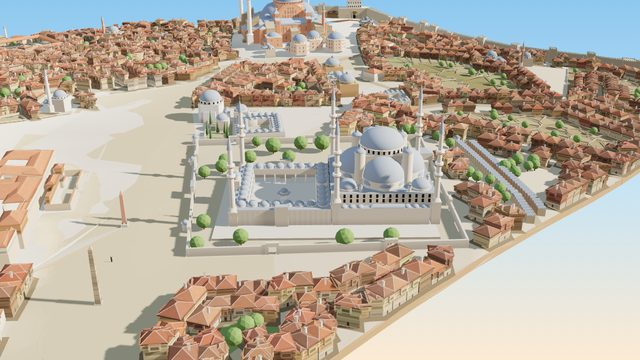
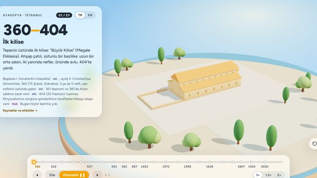
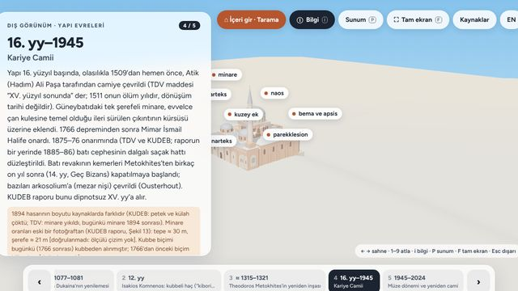
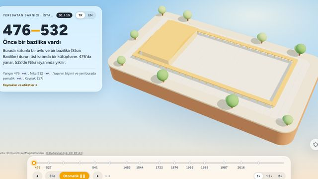
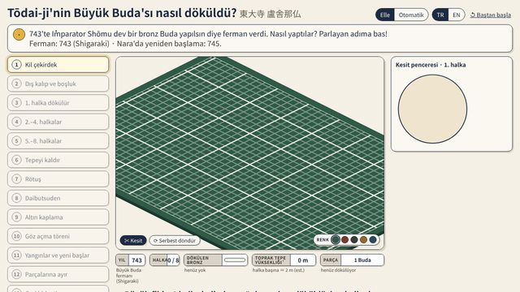
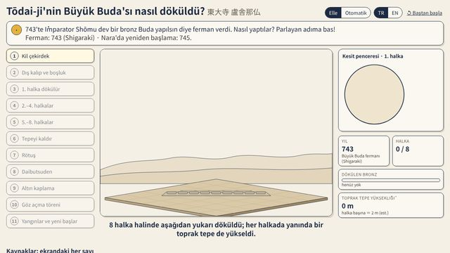
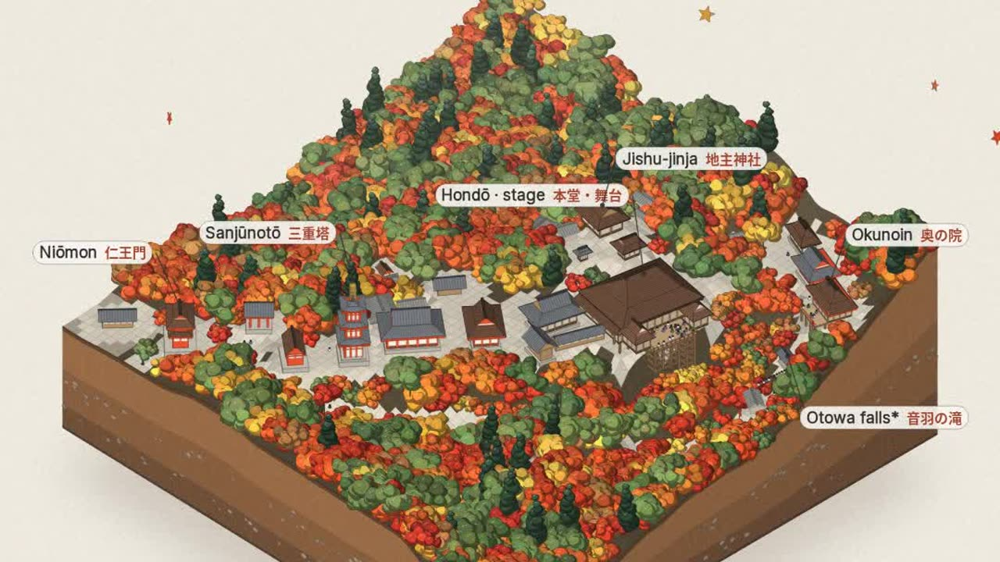

İstanbul 3D Şehir Haritası güncellendi (taslak · work in progress · Anadolu yakası eklendi: Üsküdar, Harem, Karacaahmet · yer listesi ve bilgi kartları · Places list and info cards)
Dikilitaş nasıl dikildi (3B · Theodosius Dikilitaşı'nın 390'da Hippodrom'da dikilişi ve kaide kabartmaları · yeni)
İstanbul 1786 · Ayasofya – Atmeydanı – Çemberlitaş (taslak · work in progress · 3B · Kauffer 1786 planına göre ahşap evler, anıtlar ve gerçek arazi · yeni)
Ayasofya / Hagia Sophia (kil diorama · türbeler eklendi · tombs added · yeni)
Kariye / Chora · Yapı evreleri (3D · dış görünüm ve tarihî gelişim, 1077–2024 · taslak · work in progress) Kariye / Chora · İç mekânda gezin (3D tarama · içeride serbest gezinme · Free walk inside · büyük dosya, Wi-Fi önerilir · large download)
Kariye / Chora · İç mekânda gezin (3D tarama · içeride serbest gezinme · Free walk inside · büyük dosya, Wi-Fi önerilir · large download)

Yerebatan Sarnıcı / Basilica Cistern (kil diorama · Ağlayan Sütun, Medusa · yeni)
Tōdai-ji Daibutsu (3D · kaynaklar güncellendi · sources updated)
Tōdai-ji Daibutsu (2D · kaynaklar güncellendi · sources updated)
Kiyomizu-dera, Kyoto yeni (sonbahar / autumn · Niōmon'dan ahşap sahneye ve Otowa şelalesine)